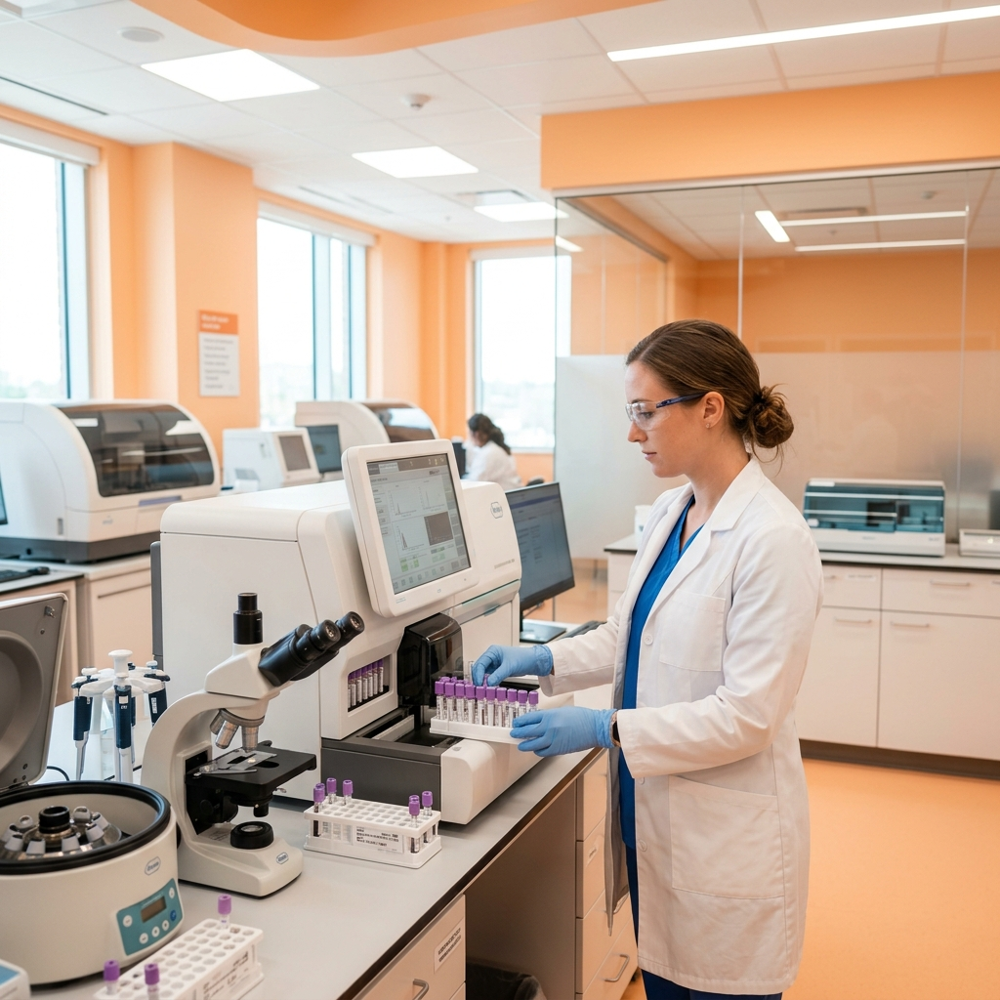

In-house lab and diagnostic centre in Ullal, Bengaluru. Blood tests, ECG, Holter monitoring, X-ray and full body health check-ups. Call 063608 55615.

At Hermes Health Care in Ullal, Bengaluru, we are dedicated to providing world-class Lab & Diagnostics services. Our clinic serves as a primary healthcare anchor for residents of Ullal, Jnana Ganga Nagar, Rajarajeshwari Nagar, Nagarbhavi, Kengeri, and surrounding areas. Our patient-first philosophy guides our team of experienced doctors and medical specialists to deliver evidence-based, compassionate care in a state-of-the-art facility.
Our clinical approach combines advanced diagnostics with specialized consultation to manage acute illnesses, track chronic conditions, and promote preventative wellness. We believe that health management should be comprehensive, accessible, and customized to each individual's unique physiological needs. Whether you require a routine health screening, minor surgical interventions, advanced physiotherapy programs, or specialist consultations for complex systemic illnesses, our multidisciplinary team coordinates closely to support your path to recovery.
Hermes Health Care represents a modern day care and multi-speciality model. This means that we perform diagnostics, consultations, minor surgeries, and active rehabilitation all under one roof, saving patients from the stress of navigating large corporate hospitals for primary and secondary care. We run daily clinics from 9:00 AM to 9:30 PM, ensuring that healthcare is accessible even during late evenings for working professionals and families.
Do you have questions about our Lab & Diagnostics services? Consult our doctor today.
If you or your family members are experiencing any of the following symptoms, scheduling a medical consultation at Hermes Health Care in Ullal is the first step toward diagnosis and relief. Ignoring early warning signs can lead to complications and chronic health challenges.
Feeling exhausted daily, which could indicate vitamin deficiencies, anemia, or thyroid imbalances.
Fluttering sensations in the chest or dyspnea during mild exertion, indicating need for an ECG or Holter test.
Persistent stomach aches indicating the need for blood pathology, urine profiling, or metabolic testing.
Unexplained localized skeletal pain indicating the need for an diagnostic digital X-ray screening.
Recurrent high temperature or low immunity, indicating the need for a Complete Blood Count (CBC) profile.
Unstable blood pressure readings requiring diagnostic tracking and laboratory fluid profiling.
Experiencing any of these warning signs? Let our clinical team examine you.
At Hermes Health Care, our clinical infrastructure is fully equipped to diagnose, manage, and treat a wide spectrum of health conditions. Our focus is on restoring health through evidence-based protocols and individualized medical attention.
Do you need specialized care for any of these conditions? Schedule an evaluation today.
Accurate treatment depends entirely on precise diagnostics. At Hermes Health Care in Ullal, Bengaluru, we employ a meticulous diagnostic approach. Our in-house clinical laboratory operates under strict calibration standards, utilizing modern diagnostic equipment to deliver highly reliable results.
During your consultation, our doctors perform detailed physical examinations and take a comprehensive history of your symptoms. Based on their initial findings, they may recommend targeted diagnostics, which can include pathology blood profiling, biochemistry panels, digital ECG, Holter monitoring, or low-dose digital X-rays. Having these services available in-clinic ensures that we can quickly correlate laboratory data with your clinical presentation to make safe, fast, and effective treatment decisions.
We prioritize patient comfort and safety during all diagnostic procedures. Our lab technicians are highly trained in pediatric and geriatric phlebotomy, ensuring blood collection is as painless and stress-free as possible. For patients with mobility limitations, we coordinate home sample collection services across Ullal and nearby neighborhoods, bringing our certified laboratory standards directly to your doorstep.
Do you need to schedule a diagnostic test or health package? We offer fast reporting.
We design personalized treatment regimens tailored to the severity of your condition, age, lifestyle, and overall wellness goals. Our clinical team believes in evidence-based pathways, utilizing conservative and medical therapies as a primary line of treatment, reserving surgical interventions for cases where structural corrections are absolutely necessary.
Our treatment options span advanced pharmacological management, specialized daycare therapies, structured physical rehabilitation, and minor outpatient surgical procedures. By combining the skills of our general physicians, orthopaedic surgeons, diabetologists, gynecologists, and physiotherapists, we provide comprehensive, cross-specialty recovery plans. This is particularly beneficial for senior patients managing multiple conditions, such as arthritis, diabetes, and hypertension, who require carefully coordinated medical supervision.
Education is a core pillar of our treatment philosophy. We spend time helping patients understand their diagnoses, the therapeutic mechanism of their prescribed medications, and the importance of active lifestyle modifications. Our team provides detailed guidance on clinical nutrition, therapeutic exercises, and stress management, empowering you to maintain long-term recovery and prevent future health complications.
Consult our clinical specialists to map out your personalized recovery pathway.
Choosing Hermes Health Care for your medical needs provides numerous clinical and patient-centered benefits:
Experience premium, patient-centric healthcare. Schedule your visit today.
To help you understand why Hermes Health Care is preferred by residents in Ullal, Bengaluru, we have compiled a comparison table outlining key differences between our patient-first facilities and typical local clinics:
| Metric | Hermes Health Care | Average Labs |
|---|---|---|
| Turnaround Time | Routine blood reports within 4-6 hours | Next day reporting (24-hour delay) |
| Home Sample Collection | Available across Ullal, Jnana Ganga Nagar & Kengeri | Limited availability or high charges |
| Advanced Cardiac Tests | In-house digital ECG & Holter monitors | Only pathology / no cardiac diagnostics |
| Pathologist Oversight | Supervised and certified laboratory operations | Unsupervised technicians only |
Our in-house clinical lab operates with high sanitation, calibrated machinery, and certified technicians.
Supervised by pathologists and clinical analysts. Reports are processed with strict quality checks to ensure accuracy, safety, and fast turnarounds for diagnostic reviews.
Book Health PackageWe maintain the highest clinical standards to ensure accurate diagnosis, comfortable procedures, and successful recovery outcomes.
Consult with registered and certified doctors holding post-graduate medical qualifications and years of tertiary hospital experience.
Receive scientifically validated, peer-reviewed therapy plans designed around the latest international medical guidelines.
We prioritize your questions, values, and comfort, ensuring you never feel rushed during physical examinations or consultations.
We deliver outpatient consultations, diagnostics, and daycare procedures to residents in nearby neighborhoods:
Have questions about our Lab & Diagnostics services? Browse answers to common patient inquiries:
Our lab offers a comprehensive range of diagnostics including Complete Blood Count (CBC), Liver Function Tests (LFT), Kidney Function Tests (KFT), Thyroid Profiles, Lipid Profiles, HbA1c, digital ECGs, 24/48-hour Holter monitoring, and digital X-rays.
We offer highly affordable and competitively priced health packages. Please contact our reception desk on WhatsApp for the exact prices of our Basic, Executive, and Full Body Check-Up packages.
Yes, tests like fasting blood glucose and lipid profiles require 10 to 12 hours of overnight fasting. You may drink plain water during this period, but avoid coffee, tea, or food.
A Holter monitor is a portable, wearable device that continuously records your heart's electrical activity (ECG) for 24 to 48 hours, capturing heart rate irregularities that a standard ECG might miss.
Most routine blood test reports (CBC, sugar, lipids, kidney, liver profiles) are processed and emailed within 4 to 6 hours. Specialized hormone or cultural tests may take 24 to 48 hours.
Yes, our in-house diagnostic centre and laboratory is open daily, including Sundays, from 9:00 AM to 9:30 PM for sample collection and ECG services.
Our package includes Liver Function (LFT), Kidney Function (KFT), Thyroid Profile, Lipid Profile, Diabetes Profile (FBS, HbA1c), CBC, CRP, Vitamin D, Active Vitamin B12, Calcium, and Iron levels.
We provide bedside portable digital X-ray services for elderly or bedridden patients in and around Ullal, bringing diagnostic imaging directly to your home.
A CBC (Complete Blood Count) evaluates blood cells, hemoglobin, and infection markers. An LFT (Liver Function Test) measures blood proteins and enzymes to assess liver health.
Healthy adults are advised to get a basic health check-up once a year. Individuals over 40 or those with chronic conditions like diabetes or high blood pressure should get checked every 6 months.
Yes, we provide twelve-lead digital electrocardiograms (ECG) in-clinic for quick, accurate cardiac screening and detection of heart rate irregularities.
Fasting blood sugar should ideally be below 100 mg/dL, and post-prandial (2 hours after food) should be below 140 mg/dL. HbA1c should remain below 5.7% for non-diabetic adults.
You can schedule a blood collection or diagnostic check by calling 063608 55615, or messaging us on WhatsApp to book a time slot or request home collection.
A C-Reactive Protein (CRP) blood test measures systemic inflammation. It is performed to help detect acute infections, inflammatory conditions, or evaluate cardiovascular risks.
Yes, all laboratory and diagnostic reports are converted into secure PDF format and shared directly with you via WhatsApp or email for easy retrieval.
Take control of your health. Consult our experienced medical specialists in Ullal, Bengaluru for expert diagnostic and recovery pathways.